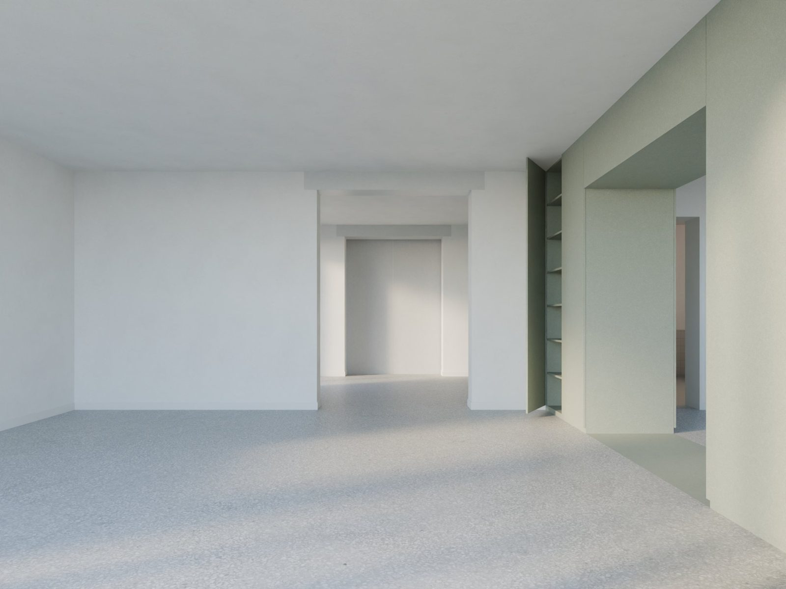
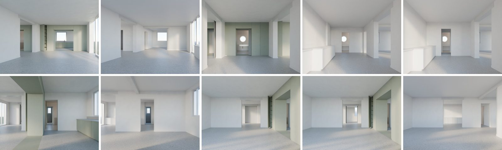
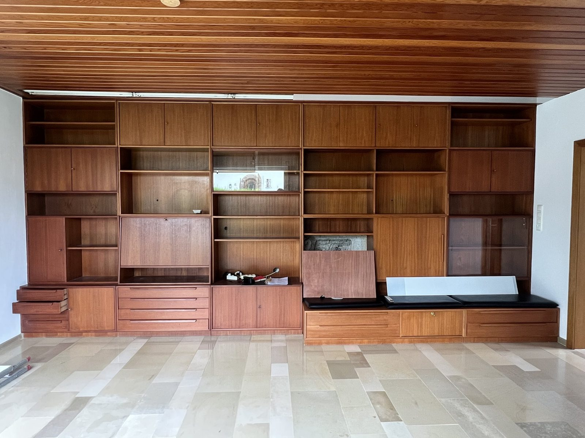
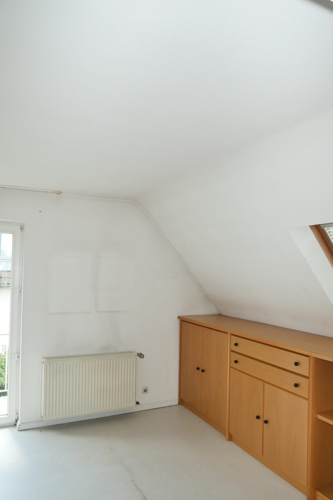
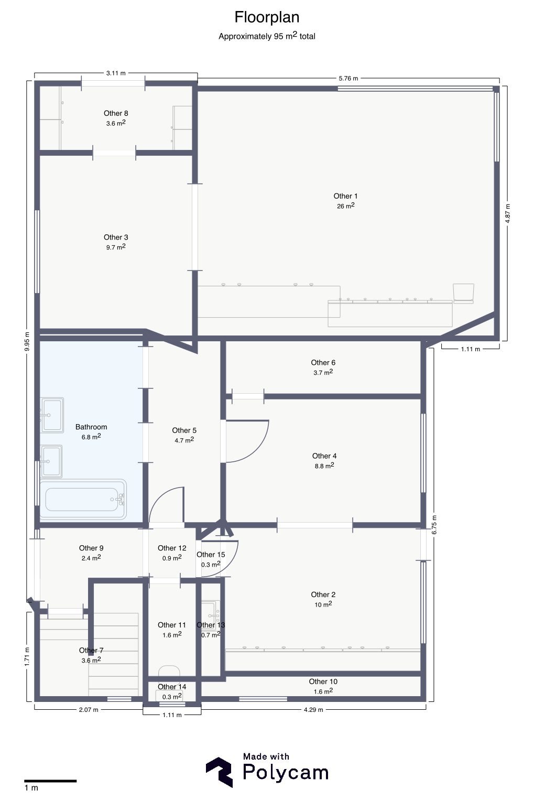
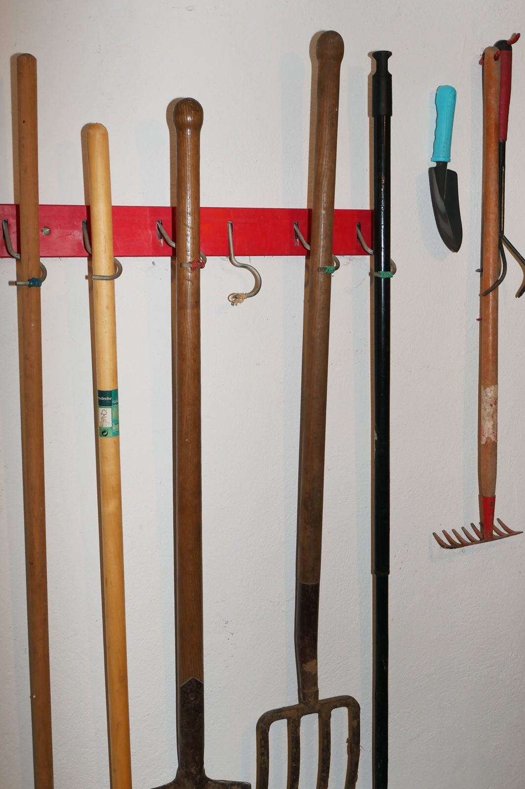

über
etcetera ist das Arbeitsarchiv von Christian Sternhagen und Jonathan Burkard. Es geht auf Christians Masterarbeit „das wilde bauen“ an der Leibniz Universität Hannover zurück: die Frage, wie sich Menschen, Orte, Ideen und vorhandene Ressourcen zu Architektur verbinden lassen. 2026 begann es als Ablage für den Umbau eines Hauses von 1953 in Aachen-Kornelimünster und wächst seitdem mit jedem Projekt, jedem Fund und jeder Frage, die sich ein zweites Mal stellt.
impressum
Jonathan Burkard
Driesener Straße 67
10439 Berlin
archundkrach@gmail.com
Ein offenes Archiv aus der laufenden Arbeit an Architektur: Protokolle, Normen, Referenzen, Material, Werkzeuge und Orte, so wie sie im Projekt anfallen, und die Verbindungen zwischen ihnen.
Nichts davon ist fertig. Der Alltag steht neben dem Entwurf, das Vorgefundene neben dem Neuen, das Eigene neben dem, was andere gebaut und geschrieben haben.
Links eine Liste oder den Graphen wählen.
texte 7
2026-10-22Bauherrintermin
Besprechung :
Realistischer Zeitplan:
2026:
- Schadstoffuntersuchung
- Abbruch/Entkernung
- Kanalsanierung
- Detailplanung/Werkplanung mit Ansichten etc. aus Erkenntnissen der Entfernungen fertigstellen
- Kostenberechnung
2027:
- Ausschreibung/Vergabe
- Fortlaufende Werkplanung
- Start der Rohbauarbeiten, technische Einbauten, Innenausbau
- Fertigstellung voraussichtlich im Sommer 2027
Maßnahmenkatalog Umbau EFH:
Bauliche Maßnahmen:
- Rückbau/Abbruch aller Oberflächen im EG und OG bis auf Rohbau (Boden, Wände, Decken)
- Durchbrüche: Bodentiefer Durchbruch Fassade Ost (Pos. 1), Durchbruch normales Fenster im Bad (Pos. Noch nicht in Statik vorhanden), 2x Bodentiefe Öffnung Fassade Süd (Pos. Noch nicht in Statik vorhanden), Abbruch nichttragender Wände (4 Stk.: Pos. 2, Pos. 4, Pos. 5), Neue Wandöffnung (Pos. 3)
- Neue Fenster: 8x im EG, 3x im 1.OG, davon: 1x großes Schiebeelement (ca. 2,90m); 3x bodentiefe Öffnungsflügel (ca. 1,60m, 2x im EG, 1x im OG)
- Neue Türen: 1x Neue Eingangstür Fassade Ost
- Neue Außenwände: Neue Mauer in d. Fassade Ost (Anschluss Pos. 1)
- Sanierung d. Kanals durch Inlineverfahren o. Ähnliches
- Neue Wasserleitungen im gesamten Haus
- Neuer Bodenaufbau: Dämmung, Estrich, Bodenbelag (Im Detail zu klären)
- Neue massive Innenwände: Neue Wand zw. Schlafzimmer und Küche (Bims Hohlblock, 30cm), Neues Randstück zwischen Verteiler und Bad (Bims Hohlblock, 30cm), Neue MW-Wände im Badezimmer (voraussichtlich 2 Stk. 11,5 MW)
- Neue nichttragende Wände: Neue Badezimerwand, ggf. teilweise Transluzent
- Neue Träger/Stützen (Stahl):
- Neue Schreinerarbeiten: Schrankwand ca. 11,00m mit div. Funktionen und als Raumtrenner
- Neue Küche
- Neue Armaturen in den Badezimmern (Gäste-WC, Hauptbad, Badezimmer 1.OG)
- Fassade wird am Ende neu verputzt
Energetische Maßnahmen:
- Dämmung Dachboden, Dämmung Dach Anbau, Dämmung Bodenbelag EG, neue Fenster
- Wärmepumpe
- Neue Heizkörper
Feedback 22.10.26
- Heizkörper im Wohnzimmer, reicht da einer?
- Sie möchte gerne eine „Begehbare Dusche“ und hat Sorge vor Einsichtigkeit, sprich sie kann sich nicht vorstellen mit transluzenten bodentiefen Elementen zu arbeiten!
2026-10-22Energieberatungtermin
Protokoll 22.10.26
Fragen an Energieberatung Berrenberg:
- Ist eine Wärmepumpe sinnvoll bei einem umgedämmten Altbau? Was kostet eine WP?
- Welche Maßnahmen der vorgeschlagenen sind bei diesem Bauvorhaben unbedingt notwendig (Kostengründe)
- Sind die Maßnahmen als Einzelmaßnahmen alle förderfähig? Wer stellt den Förderantrag? (Vermutl. Bauherrin) Gibt es Förderzyklen? Wenn ja, wann sind die?
- Vorgangsnummer merken, wird bei Antrag benötigt
- 15% auf die ersten und mit iFSP bis zu pro Jahr - (Man kann immer pro Jahr fördern lassen, alles darüber hinaus fällt dann ins nächste Jahr)
- BauSep f. Materialpreise (?)
- Ganzes EG: 8CM PUR-Schaum, dann förderfähig; Wenn wir 10% aller Bauteilfläche ändern müssen wir ab dann nach Gebäudemodernisierungsgesetz einen U-Wert von 0,3 einhalten
- Wenn Dachflächen von Innen, dann 16cm
- Flachdach: Aufsparrendämmung v. Bauder PIR PLUS 12cm, Förderfähig ist es ab 0,14 U-Wert
- Dämmung Dach v. Anbau sinnvoll? Dämmung Bodenaufbau?:
- Hydraulischer Abgleich f. Heizung: Gibt zahlen vom Energieberater, dann kann der SHK Betrieb damit arbeiten (VDZ-Formular)
- Wärmepumpe ist immer die sinnvollste Heizmethode, Heizkörper müssen große flache haben sodass Vorlauftemperatur runter geht - dann ist es sinnvoll!
- Herstellerempfehlung: EVO-TEC GmbH; Lebherz & Partner Aachen (machen auch PV): Immer Installation und Service/Wartung anbieten lassen!; Lambda WP werden bei Zewotherm in Remagen hergestellt und angeboten - das sind sehr gute Was
- Taupunktverschiebung d. Fenster unter welchen Umständen kein Problem?:
Mit Fensterbauer zu klären und Fachunternehmererklärung geben lassen: Calciumsilikatplatten sind alkalisch, dämmt ein wenig und ist daher in der Laibung sinnvoll, keine Silikonfugen, Fenster mit Kompriband wird vor den Stoß gesetzt, Leitfaden v. Fachhochschule Rosenheim o. Von RAL
- Thema PV: Keine Mehrwertsteuer aber sonst keine Bezuschussung mehr
- Heizlastberechnung: Dachdämmung im Anbau, Neue Fenster (0,9 kriegt man besser hin 0,5-0.7), Türen wurden getauscht, Dachboden gedämmt, Boden auch gedämmt (2-3 mindestens, 8cm wären gefördert)
- Wer reicht welche Anträge ein?:
- Dämmgeschichten macht Energieberater (Sachen bei BAFA)
- Wärmepumpen machen auch die Installateure (KfW-Bank Sachen)
- Für die Förderung braucht man ein Konkretes Angebot einer Fachfirma sowie die Beauftragung mit Liefer/Leistungsvertrag mit aufschiebender Bedingung;
Wärmepumpe bis allerspätestens Ende Januar ( Ab Februar 2027 -4%): Alle details dazu bei KFW 458
2026-09-19Anpassungen Werkvertragtermin
Anpassungen Werkvertrag vom 19.09.2026
Titel angepasst – "mit vorgeschalteter Zielfindungsphase" gestrichen, da diese Phase bereits vor Vertragsschluss abgeschlossen war.
Offene Punkte (Umnutzung Obergeschoss, Carport etc.) – klargestellt, dass diese im Rahmen der Entwurfsplanung besprochen und entschieden werden; ein gesondertes Kündigungsrecht hierfür gibt es nicht.
Bauvorlagen – präzisiert, dass wir Zeichnungen als fachliche Grundlage erstellen, die formelle Einreichung beim Bauamt aber – wie bereits an anderer Stelle im Vertrag erwähnt – eine separat zu beauftragende, bauvorlageberechtigte Person übernimmt.
Baukünstlerische Oberleitung (gestalterische Begleitung während der Bauphase) – ergänzt, wann und wie diese stattfindet, je nachdem ob die Objektüberwachung separat beauftragt wird oder nicht.
Honorar für Zusatzleistungen – klargestellt, dass Klärungsgespräche zu offenen Punkten im regulären Stundenhonorar enthalten sind, nicht doppelt berechnet werden.
Verweise innerhalb des Vertrags korrigiert – ein paar Absatzverweise (Vertragslaufzeit, Abnahme) wurden vereinheitlicht, da sie sich auf einen zwischenzeitlich gestrichenen Absatz bezogen hatten.
Kleinere Schreibfehler korrigiert.2026-09-18Rohbau und SHKtermin
Protokoll 18.09.26
Ortsbegehung Scheepers Rohbau:
- Scheepers kann die Durchbrüche, Rückbau, Neubauten der Wände machen (2-3 Tage f. 3 Leute)
- Er braucht von uns: Konkrete Pläne mit Maßen, Kleines Leistungsverzeichnis: Was muss exakt wo gemacht werden? „Bodenabbruch bis Estrich“, „Abbruch der Wandverkleidung“ etc.
- Er braucht Statik
Ortsbegehung SHK Rademacher:
Thema Heizung/Energie:- Heizlast berechnen + Rohrnetzberechnung + hydraulischer Abgleich- Das macht Energieberatung (Kontakt: : )
- Rohrnetzberechnung Kontakt:
- Betrieb/Planung der PV-Anlage sowie Wärmepumpe muss dem Netzbetreiber gemeldet werden
- Bestandsheizung ist ein Brennwertgerät
- Heizungsleitungen: Alles außer Kupfer muss getauscht werden, alles muss isoliert werden
Thema Trinkwasser:
- Ist Zinkrohrleitung, muss getauscht werden, eig. Komplett neu, Filter sind in Ordnung, aber Leitungen neu
Thema Kanal:
- Wo ist die OK Rückstauebene? OKRSE = OK Strasse/Erde?
- Wo wird das Regenwasser hingeleitet? Läuft das in den Keller? Wäre problematisch, Thema Rückstaueebene
- Leitungsführung Kanäle klären, was muss getauscht werden? Risse etc.?
- Generell: Konkrete Pläne inkl. Heizlast etc. verschicken an ihn, dann kann er Aussagen
2026-09-16Bauamttermin
Besprechung 16.09.26
Projektinformationen:
- Umbau/Modernisierung eines Einfamilienhauses in Aachen, Kornelimünster
- Adresse: , , Gebäudeklasse 2
- Baujahr 1953, Anbau ca. 1960-65 gefolgt, Fläche: 175,5QM — 80 (EG)+ 48 (OG)+ 47,5 (UG) Nutzfläche —
- Vorhaben liegt nicht in einem B-Plan Gebiet, es liegt im Innenbereich (nicht im Außenbereich), es ist kein Baudenkmal und es gibt keine örtliche Gestaltungsvorschrift
Was wir vorhaben:
- Teilentkernung und Austausch der innenliegenden Oberflächen (Neue Bodenbeläge, neuer Anstrich)
- Mehrere Durchbrüche: Durchbruch Küche-Wohnzimmer (ca. 2,60m, tragendes Bauteil), Abbruch der Brüstung der Wohnzimmerfassade (ca.3,95m), Abbruch der Brüstungen Küche + Schlafzimmer, Neue Fensteröffnung im Badezimmer (kleines untergeordnetes Fenster, max. 80cm Durchmesser)
§ 62 Abs. 11 a und 11b: Geringfügige Eingriffe in die Statik sind verfahrensfei. (z.B. kleiner Durchbruch; Unbedenklichkeitsbescheinigung wird vom Statiker auf Nachfrage zur Verfügung gestellt)
- Energetische Maßnahmen: Neue Fenster, Solarpaneele, Wärmepumpe
- Elektr. Gesamtsanierung
- Austausch/Sanierung der Rohre
- Errichtung eines neuen Carports auf dem Grundstück
- Ggf. Einfriedung / Sichtschutz zum Nachbar
Wir versuchen das Haus mit möglichst wenig Eingriffen, die den Charakter des Bestands nicht verändern, so gut wie möglich wieder in Schuss zu bringen, sodass dort zeitnah einziehen kann. Daher besteht die Absicht, dass das Verfahren im Bereich der Verfahrensfreiheit nach § 62 BauO NRW liegt.
Unsere Fragen:
- Unter welchen Bedingungen liegt dieses Verfahren innerhalb bzw. außerhalb der Verfahrensfreiheit (Wir sind noch keine eingetragenen Architekten, daher für uns sehr wichtig zu klären)
- Welche Unterlagen müssen im Falle der Verfahrensfreiheit beim Bauamt vorgelegt werden? Ist der Umbau dann irgendwo zu melden?
Unbedenklichkeitsbescheinigung Statik,
- Wo darf das Carport auf dem Grundstück liegen, wie groß darf es sein & ist eine Veränderung der Zufahrt zulässig?
Bis zu 30 Kubikmeter pro Gebäude zulässig (löst keine Abstandsflächen aus) - Zufahrt muss gewährleistet sein. Absetzung des Bordsteins - FB 68 Verkehrsplanung anfragen
- Dürfen wir theoretisch einfrieden zum Nachbar hinten? Wenn ja wie lang & wie hoch darf die Mauer sein?
Max. 2 Meter Einfriedung (Bauordnung) - Nachbarschaftsschutzgesetz prüfen (Privatrecht)
- Wir würden gerne einen Wasseranschluss ins 1. OG legen, sodass irgendwann eine zweite Küche installiert werden könnte, ist das zulässig?
Ist zulässig solange keine Nutzungsänderung vorliegt. Brandschutz beachten beim verlegen von Leitungen
- Sonstiges
Hecke darf nur zwischen 01.04 - 30.09 geschnitten/entfernt werden
Neue Fenster kein Problem aber auch ein Unbedenklichkeitsbescheinigung erforderlich
Bäume richtig einzeichnen oder weglassen2026-08-25Besprechungtermin
Besprechung 25.08.2026
- GR mit Innenmaße
- 2 Varianten - GR
An schicken
- Baumdeadline 01.05.2027
- Schreiner:
- Planung Badezimmer - Dusche und Wanne (Planung )
2026-07-31Ortsbegehungtermin
31.07.26 Protokoll - Ortsbegehung
Baubeschreibung:
Bauvorhaben in , Kornelimünster ( ): Bei dem Bestandshaus (freistehend, Baujahr 1953, später um einen eingeschossigen Anbau erweitert, Gebäudeklasse 2) wünscht sich die Bauherrschaft verschiedene Anpassungen, die vor allem im Innenbereich liegen. Im Allgemeinen:
Das Haus wird Teil-Entkernt. Der Großteil der Oberflächen soll abgebrochen und ausgetauscht werden, ein paar Nicht-tragende Wände werden abgerissen, ein paar bleiben bestehen - Entwurfsabhängig zu klären.
Im Einzelnen ist Folgendes geplant.- Zwei Durchbrüche, die statische Bauteile betriffen. Standsicherheitsnachweis eines sachkundigen Statikers wird beauftragt.
- Eine neue Öffnungen in der Außenfassade zur Straßenseite
- Neues elektr. Garagentor + Elektroanschluss in Garage! (Wichtig für BH)
- Zweifache Anpassung der Brüstungshöhe zu Bodentiefen Fensterelementen in der Außenfassade zur benachbarten Grundstücksseite.
- Austausch der bestehenden Fenster durch neue Holzfenster (Einzelmaßnahme energ. Sanierung)
- Änderung der Bödenbeläge, Wandbeläge,Türen, Einbau von neuen Nicht-tragenden Wänden
- Neue Schreinerarbeiten hinsichtlich Einbauschränken
- Ertüchtigung der Sanitären anlagen, hinzufügen eines weiteren WC's im Bestandsbad, neue fliesen, neue Oberflächen, neue Rohrleitungen
- PV-Anlage auf dem Flachdach, ggf. Wärmepumpe hier noch austausch mit energieberater notwendig
- Neue Terassenoberflächen, ein Vordach/Carport als Wetter und Sonnenschutz im Osten als Anbau an den Bestand
- Neues Holzdeck als zweite Terasse an der Küche und Schlafzimmer im Süden angeschlossen
- Einfriedung/Sichtschutz zum Nachbargrundstück im Süden
- Bodentiefe Eckverglasung im Anbau
- Neue Eingangstür im Anbau
- Neue Eingangssituation im Treppenraum
- Budget: max. ; eher
- Statiker braucht: Vorentwurf mit Durchbrüchen, Scan Bestandspläne
- Feuchtigkeit/Rohre prüfen: Kanalfahrt + Dachentwässerung prüfen mit AREI, WILDEN, SCHNEIDER; Wo liegen Steigleitungen, wie kriege ich WC in das andere Badezimmer? Wo stelle ich Waschmaschine hin in Keller?
- Hydrometer in Keller hängen um Feuchtigkeit zu sehen ( )
- Einbaumöbel rausbauen und in Garage unterstellen (Unter Kartons o.ä. wg. Feuchtigkeit; Studis fragen)
- 01.09.26: Entwurf an Rohbauer (BRAUN-BAU) f. Angebot der Durchbrüche + Abbrucharbeiten (Tapeten, Holzdecke etc. am besten Abbrucharbeiten als Erstes)
- Fragenkatalog an f. Energieberater (Gas - Wärme pumpe Hybrid)
- Förderungslandschaft klären (Einzelmaßnahmen wie Fenster förderfähig?)
- Elektriker anfragen (macht ), dafür erst Entwurf fertig machen; Elektrik in Garage möglich?
- Wie hoch kann eine Wand o.ä. in Ri. Nachbar f. Sichtschutz?
Wichtig als allererstes zu klären:
https://www.staedteregion-aachen.de/de/navigation/aemter/amt-fuer-bauaufsicht-und-wohnraumfoerderung-a-63/untere-bauaufsicht-digitale-antragstellung
Entwurf
Thema Strom Garage (Elektro Sommer):
- Gesamtsanierung Elektro ist von Nöten (unabhängig von Garage); Wann kann dann etw. in die Garage verlegt werden? Wann frühstmögl. Zeitpunkt?
- will um jeden Preis zu allererst Strom in der Garage
- Kabel wird durch Boden geführt von Garage, dann Aufputz hoch und irgendwie in Kellerraum zum Zähler (wird bisschen komplizierter)
Thema Unterteilung in 2 Wohneinheiten:
- Baurechtlich Nutzungsänderung eigl. Bauantrag???
Thema Vordach:
- Genehmigungsfrei: „Garagen einschließlich überdachter Stellplätze mit einer mittleren Wandhöhe bis zu 3 m und einer Brutto-Grundfläche bis zu insgesamt 30 m²“
- Abstandsflächen: (6) Bei der Bemessung der Abstandsflächen bleiben außer Betracht
1. nicht mehr als 1,50 m vor die Außenwand vortretende Bauteile wie Gesimse und Dachüberstände,
2. Vorbauten, wenn sie
a) insgesamt nicht mehr als ein Drittel der Breite der jeweiligen Außenwand in Anspruch nehmen,
b) nicht mehr als 1,60 m vor diese Außenwand vortreten und
c) mindestens 2 m von der gegenüberliegenden Nachbargrenze entfernt bleibenThema Mauer (Nennt man „Einfriedung“):
- „In den Abstandsflächen eines Gebäudes sowie ohne eigene Abstandsfläche sind Stützmauern und geschlossene Einfriedungen außerhalb von Gewerbe- und Industriegebieten mit einer Höhe bis zu 2 m zulässig.“
- Max. 2M Hoch, ggf. Nachbarn informieren, muss innerhalb unseres Grundstücks liegen.
Thema Rohre: -Heizung-Sanitär Angebote reinholen f. Sanierung der Rohre
Thema Dach:- Dachdecker kontaktieren, Zustand d. Daches klären
Thema Balkon:
- Der Maler gegenüber meint, man müsse „den Balkon neu machen“ (Info v. , ggf. Nachhaken)/ Sanieren - Maler ist „gesetzt“
EG:
- Holzfenster + Holztüren (Deckenhoch mit Oberlicht?)
- Badezimmer kriegt WC + neue Pfosten-Riegel Wand mit Oberlicht (Siehe Bartschers Ref.)
- Eckfenster Bodentief
- Küche & Schlafzimmer Bodentiefe Fenster
- Vordach Garten
- TRH ist Gemeinschaftsfläche
- Erschließung v. Osten
- Vordach/Carport im Osten: Was ist hier möglich? Achtung!: Garage schon vorhanden, darf man überhaupt Vordach machen? Was wäre alternativ? Auffahrt?
- Flur/Esszimmer bekommt durchgehendes Einbaumöbel, mit funky Farbe? Schöne Schreinerarbeit mit genug Stauraum?
- Pfosten-Riegel-Fassade mit Oberlicht f. Großes Badezimmer
- Eingangstür zu beiden Wohnungen planen
- Variante mit Küche im Anbau? Was für eine Nutzung dann im anderen Raum?
- Küche & Schlafzimmer bekommen erhöhtes Holzdeck, darunter gekiest, gegenüber Wand mit Rankpflanzen
OG:
- Einbauschrank in Schlafzimmer?
- Alle Tapeten u. Oberflächen raus, neue Oberflächen rein, Wände weiß, Boden?
- Badezimmer neue Fliesen
- Küche angeschlossen an Badezimmer
To Do’s bis 01.09.26:
- Vorentwurf fertig machen
- Klären ob Verfahrensfrei (2. WE)
- Zeitplan aufstellen mit Gewerken
- Werkvertrag fertig machen
- Studis organisieren, die Holzschrank raus räumen
- Oberflächen abbrechen
Bilder Ortsbegehung Schrankwand
wissen, normen 14
w-a-004Anfrage Rohbauanleitung
- art
- anleitung
- status
- bestätigt
Der Rohbauer braucht konkrete Pläne mit Maßen, ein kleines Leistungsverzeichnis („Bodenabbruch bis Estrich“, „Abbruch Wandverkleidung“ …) und die Statik.
Referenzwert Aachen (Scheepers): Durchbrüche, Rückbau und neue Wände in 2–3 Tagen mit 3 Leuten.w-a-005Anfrage Statikanleitung
- art
- anleitung
- status
- bestätigt
Der Statiker braucht den Vorentwurf mit allen Durchbrüchen und Scans der Bestandspläne. Bei einem verfahrensfreien Umbau liefert er auch die Bescheinigung der Standsicherheit, ohne die Eingriffe in tragende Bauteile nicht verfahrensfrei sind.
Aus dem Projekt
- Ortsbegehung 31.07.: was der Statiker braucht.
- Ablauf laut Mail-Betreffs: Angebot 02.09., Positionsplan zur Abstimmung 22.09., Statik und Positionsplan 06.10. Vom Angebot bis zur Berechnung also gut fünf Wochen.
- Offen: Enthält die Statik die Bescheinigung für Durchbrüche und neue Fenster? (Aufgabe in 2026-09-16 Bauamt)
- Kosch (02.09.): Einen Prüfingenieur braucht es nur, wenn das Bauamt ihn ausdrücklich verlangt. Bei einem einfachen Umbau ist das unüblich, er kostet extra und braucht etwa zwei Wochen (2026-09-02 Angebot Statik)
- Der Statiker braucht dwg für die Positionspläne, Schnitte und alle Bestandsunterlagen. Fehlen Deckenstärke, Spannrichtung und Bewehrung, bleiben Durchbrüche unter der Decke unsicher. Dann hilft eine kleine Bauteilöffnung vor Ort (2026-09-22 Positionsplan Statik, 2026-10-15 Statik)
- Der Rohbauer bietet erst an, wenn die Statik Träger und Durchbrüche bemessen hat. Die Statik gehört deshalb früh in den Ablauf.
w-a-006Anfrage SHKanleitung
- art
- anleitung
- status
- bestätigt
Der SHK-Betrieb braucht konkrete Pläne inkl. Heizlast. Die Heizlast kommt vom Energieberater, der SHK-Betrieb arbeitet dann mit dem VDZ-Formular. Die Rohrnetzberechnung macht nicht jeder Energieberater, oft der Installationsbetrieb.
Aus dem Projekt
- Protokoll 18.09.: Heizlast, Rohrnetzberechnung und hydraulischer Abgleich „macht Energieberatung“. Berrenberg (24.09.) macht die Rohrnetzberechnung aber nicht, beim Einfamilienhaus sollte das der Installationsbetrieb können (2026-09-23 Anfrage Energieberatung)
- Früh anfragen: Keldenich hatte erst ab Ende Oktober Zeit, Brose ist bis Mitte 2027 ausgelastet, Mitzlaff konnte am Wunschtermin nicht (2026-09-05 Anfrage SHK-Betriebe)
- In Aachen gingen Kanalfahrt, Bestandsgrundriss, Aufmaß und Raumbuch schon mit der Anfrage raus.
w-a-007Meldung Netzbetreiberanleitung
- art
- anleitung
- status
- bestätigt
PV-Anlage und Wärmepumpe werden beim Netzbetreiber angemeldet, die PV schon vor der Installation. Die PV muss außerdem spätestens einen Monat nach Inbetriebnahme im Marktstammdatenregister stehen.
Aus dem Projekt
- Notiz vom 18.09.: „PV-Anlage und Wärmepumpe müssen gemeldet werden.“
- LES (10.08.): Die Anmeldung übernimmt der ausführende Elektrobetrieb. Für Wärmepumpe und PV muss der alte Zählerschrank erneuert werden, beim Hausanschlusskasten kann Regionetz mitentscheiden (2026-08-04 Beratung LES Solar)
w-a-008Anfrage Bauamtanleitung
- art
- anleitung
- status
- bestätigt
Die Bauaufsicht berät nicht zu verfahrensfreien Vorhaben, das ist gesetzlich nicht vorgesehen. Schriftlich beantwortet sie nur konkrete, nummerierte Einzelfragen, allgemein und unverbindlich. Planungsrechtliche Fragen (§ 34 BauGB) gehen an das Planungsamt.
Aus dem Projekt
- Aachen: Eine offene Anfrage (22.07.) wurde mit dem Hinweis auf die Bauberatung vor Ort beantwortet (Mo und Mi 8:30–12 Uhr, Lagerhausstraße 20, Zimmer 231 für Gebäudeklasse 1 und 2). Eine Online-Beratung gab es nicht.
- Fünf nummerierte Fragen mit Paragraphen (26.07.) wurden nach zwei Tagen beantwortet, die Nachfrage zur zweiten Wohneinheit (13.08.) am nächsten Tag.
- Projektsteckbrief, Vorhaben und Fragenkatalog aus der Notiz vom 16.09. taugen als Vorlage.
w-a-009Bestandsaufnahme per 3D-Scanwerkzeug
- art
- werkzeug
- status
- bestätigt
Scan mit Polycam (Logo auf dem erzeugten Grundriss), Export als glb/obj/dae, dxf/svg-Grundriss und csv, weiterverarbeitet in Blender.
Polycam errechnet „approximately 95 m²“, in der Bauamt-Notiz stehen 80 m² EG. Woher kommt der Unterschied? Offen ist auch, ob der Scan das Aufmaß ersetzt oder nur ergänzt hat.w-a-013Fenstertausch ohne Fassadendämmunganleitung
- art
- anleitung
- status
- bestätigt
Neue, dichte Fenster in einer ungedämmten Wand senken den Luftwechsel. Die Raumfeuchte steigt, und die kälteste Stelle ist nicht mehr die Scheibe, sondern Laibung und Ecke. Zum Fenstertausch gehören deshalb ein Lüftungskonzept, ein schimmelhemmender Laibungsanschluss und diffusionsoffene Oberflächen.
Aus dem Projekt
- Berrenberg (07.10.): Bei Dreifachverglasung mit Uw ≤ 0,95 W/(m²K) keine Bedenken wegen Schimmel. Laibung innen mit 8–10 mm Calciumsilikatplatten (basisch), keine Silikonfuge zum Mauerwerk. Fensterfalzlüfter, Feuchtemesser mit Alarm, stoßlüften. Putz mit alkalischer Farbe statt Dispersionsfarbe oder Vinyltapete.
- Gleiches im Protokoll vom 22.10., dazu: Fachunternehmererklärung vom Fensterbauer, Kompriband, Leitfaden von RAL bzw. ift Rosenheim.
- Wand in Aachen: Bims-Hohlblock 30 cm, U-Wert überschlägig 0,9 W/(m²K), eher schlechter (Jonathan, 04.10.).
w-n-001Hecken-Schnittverbotnorm
- art
- norm
- status
- bestätigt
BNatSchG § 39 Abs. 5 verbietet vom 1.3. bis 30.9., Hecken abzuschneiden, auf den Stock zu setzen oder zu beseitigen. Erlaubt sind in dieser Zeit nur schonende Form- und Pflegeschnitte. Roden geht von Oktober bis Februar.
Siehe: https://www.kreis-wesel.de/system/files/C1257D23004C5410/documents/allgemeine_informationen_zum_gehoelzschnitt.pdf
w-n-002Nicht bauvorlageberechtigtnorm
- art
- norm
- status
- bestätigt
Solange wir nicht bauvorlageberechtigt sind, können wir verfahrensfreie Vorhaben selbst planen. Sobald ein Antrag nötig wird, muss eine bauvorlageberechtigte Person die Bauvorlagen übernehmen.
Aus dem Projekt
- Werkvertrag § 1.1.11: Wir erstellen die Zeichnungen als fachliche Grundlage, die formelle Einreichung übernimmt eine separat beauftragte, bauvorlageberechtigte Person.
- Bauaufsicht (14.08.): Eine zweite Wohneinheit braucht ein Verfahren nach § 64. Damit wird dieser Punkt in Aachen relevant.
- Möglicher bauvorlageberechtigter Partner: Bartscher Architekten, im Mai angefragt (2026-05-14 Anfrage Bartscher Architekten). Wie wir uns nennen dürfen → Berufsbezeichnung Architekt
w-n-003Förderung Einzelmaßnahmennorm
- art
- norm
- status
- bestätigt
Einzelmaßnahmen an der Gebäudehülle fördert das BAFA (BEG EM), die Heizung die KfW (Programm 458). Der Antrag kommt immer vor dem Vorhabenbeginn, zusammen mit einem Vertrag unter aufschiebender oder auflösender Bedingung. Ein Energieeffizienz-Experte ist Pflicht. Die Bedingungen ändern sich oft, vor jeder Nutzung prüfen.
Aus dem Projekt
- Energieberatung (22.10.): 15 % auf die ersten , mit iSFP bis pro Jahr. Dämmung beantragt der Energieberater, die Wärmepumpe der Installateur. Konkretes Angebot einer Fachfirma und Vertrag mit aufschiebender Bedingung, die Vorgangsnummer aufheben. Wärmepumpe bis Ende Januar 2027, ab Februar 4 % weniger. PV: keine MwSt., sonst kein Zuschuss.
- Berrenberg (24.09.): Die Fachbetriebe vor dem jeweiligen Antrag mit Liefer-/Leistungsvertrag unter aufschiebender oder auflösender Bedingung beauftragen. Nachweise: Fenster (BAFA) TPB zum Antrag und TPN zur Auszahlung, Wärmepumpe (KfW 458) BzA zum Antrag und BnD danach. Beim Energieberater je (2026-09-23 Anfrage Energieberatung)
- iSFP: erst den Beratervertrag mit Bedingung unterschreiben, dann den Zuschuss im BAFA-Portal beantragen und nach dem Abschlussgespräch abrufen. Zuschuss laut Angebot (2026-09-23 Anfrage Energieberatung, 2026-10-22 Energieberatung)
- LES (10.08.): Die Bestätigung zum Antrag für die Wärmepumpe kann auch der SHK-Betrieb ausstellen (2026-08-04 Beratung LES Solar)
w-n-010Verfahrensfreie Vorhaben NRWnorm
- art
- norm
- status
- bestätigt
Was in NRW ohne Bauantrag geht (§ 62 BauO NRW) und wo die Grenze liegt. Verfahrensfrei heißt nur: kein Antrag. Die Vorschriften gelten trotzdem, die Verantwortung liegt beim Entwurfsverfasser.
Vorhaben verfahrensfrei, wenn § 62 tragende oder aussteifende Bauteile im Inneren ändern Wohngebäude der Gebäudeklasse 1 oder 2, eine berechtigte Person nach § 54 Abs. 4 bescheinigt die Standsicherheit Abs. 1 Nr. 11 b Garagen, Carports mittlere Wandhöhe bis 3 m, insgesamt bis 30 m² Brutto-Grundfläche, nicht im Außenbereich. Vorhandene Garagen zählen mit. Abs. 1 Nr. 1 b Mauern, Einfriedungen bis 2 m Höhe, nicht im Außenbereich Abs. 1 Nr. 7 a Nutzungsänderung nur, wenn für die neue Nutzung keine anderen Anforderungen gelten als für die alte Abs. 2 Eine zusätzliche Wohneinheit ist eine Nutzungsänderung und braucht ein Genehmigungsverfahren, auch wenn sie erst später genutzt wird. Leitungen für eine spätere zweite Küche vorzusehen ist zulässig. → Nicht bauvorlageberechtigt
Aus dem Projekt
- Bauaufsicht Aachen (28.07.): Fassadenänderung und Fenstertausch verfahrensfrei, weil es keinen Bebauungsplan, kein Denkmal und keine Gestaltungssatzung gibt. Statische Eingriffe mit Unbedenklichkeitsbescheinigung, die eingeholt und auf Verlangen vorgelegt wird. Bei 3 m Grenzabstand berühren neue Fenster das Abstandsflächenrecht nicht. Beim Carport das Einfügen nach § 34 BauGB selbst prüfen.
- Bauaufsicht (14.08.): Die zusätzliche Wohneinheit ist eine Nutzungsänderung, Verfahren nach § 64.
- Notiz vom 16.09.: „30 Kubikmeter“ statt 30 m², vermutlich ein Hörfehler. Einfriedung max. 2 m, Nachbarrecht prüfen. Wasseranschluss im OG zulässig, Brandschutz beim Verlegen beachten.
w-n-011U-Werte bei Sanierungnorm
- art
- norm
- status
- bestätigt
Wer ein Außenbauteil erneuert, ersetzt oder neu einbaut, muss gesetzliche Höchstwerte einhalten (GModG, seit 29.07.2026). Ausgenommen sind Änderungen an höchstens 10 % der Fläche einer Bauteilgruppe. Für die BEG-Förderung gelten strengere Werte.
Bauteil (W/m²K) Gesetz Förderung Außenwand 0,24 0,20 Schrägdach, oberste Geschossdecke 0,24 0,14 Flachdach 0,20 0,14 Dachgaube 0,24 0,20 Kellerdecke, Bodenfläche und Wand gegen Erdreich 0,30 0,25 Fenster, Fenstertüren (Uw) 1,3 0,95 Dachflächenfenster 1,4 1,0 Außentüren 1,8 1,3 Aus dem Projekt
- Energieberatung (22.10.): Bei mehr als 10 % Änderung gelten U-Werte, notiert pauschal „0,3“. Das stimmt nur für Kellerdecke und Bauteile gegen Erdreich.
- Empfohlen für die Förderung: Boden EG 8 cm PUR, Dachflächen von innen 16 cm, Flachdach Aufsparrendämmung PIR 12 cm (Bauder PIR Plus), „förderfähig ab U = 0,14“.
w-n-012Berufsbezeichnung Architektnorm
- art
- norm
- status
- bestätigt
„Architekt“ oder „Architektin“ darf sich nur nennen, wer in die Architektenliste einer Kammer eingetragen ist, das gilt auch für Wortverbindungen. Die Berufshaftpflicht hängt nicht am Titel, sondern am abgeschlossenen Studium. Ob man Bauvorlagen einreichen darf, ist eine eigene Frage → Nicht bauvorlageberechtigt
Aus dem Projekt
- VHV (27.07.): Mit abgeschlossenem Architekturstudium besteht Versicherungsschutz auch ohne Kammereintrag. „Sie dürfen sich nur nicht Architekt nennen“, ggf. mit der AK Berlin abstimmen.
- Jonathans Signatur lautete im Juni „M.Sc. RWTH Junior-Architekt AKNW“, seit Juli „M.Sc. Junior-Architekt“, ohne Kammerzusatz.
w-n-014Schadstoffe vor Rückbaunorm
- art
- norm
- status
- bestätigt
Vor Arbeiten im Bestand muss die Bauherrschaft dem ausführenden Betrieb alles mitteilen, was sie über Schadstoffe im Gebäude weiß, mindestens das Baujahr. In Häusern von vor 1993 ist Asbest möglich. Statt eines vollständigen Schadstoffkatasters reicht oft eine gezielte Beprobung der Bauteile, die wirklich rückgebaut werden.
Aus dem Projekt
- Angefragt (24.09. und 23.10.): Bodenbeläge mit Kleber, Putz und Spachtel an Durchbrüchen, ggf. Rohrisolierungen, Fensterkitt, Dämmstoffe. Auf Asbest, KMF, PAK, PCB, ggf. PCP. Ergebnis als kurzer Befundbericht.
- Witte (28.09.): Asbest und KMF auf jeden Fall beproben. /h, Labor 110– je Asbestprobe, PCB oder PAK , netto.
referenzen 20
s-b-001Haus Moosweg – Felippi Wyssenbauwerk
- autor
- Felippi Wyssen Architekten
- jahr
- 2019
- quelle
- world-architects.com
- tags
- thema/vordach thema/holzdeck material/holz
Noch kein Text.
s-b-002Haus Palm – Weyell Zipsebauwerk
- autor
- Weyell Zipse Architekten
- fotograf
- Simon Menges
- tags
- thema/einbaumöbel thema/flur material/holz farbe/weiß
Noch kein Text.
s-b-003EFH Cesana – Felippi Wyssenbauwerk
- autor
- Felippi Wyssen Architekten
- tags
- thema/anbau thema/holzdeck thema/fenster
Noch kein Text.
s-b-005Schlossbergstrasse Muttenz – Felippi Wyssenbauwerk
- autor
- Felippi Wyssen Architekten
- tags
- thema/eingang thema/vordach material/metall farbe/grau
Noch kein Text.
s-b-007Schreber House – AMUNTbauwerk
- autor
- AMUNT
- fotograf
- Filip Dujardin
- jahr
- 2012
- ort
- Aachen
- quelle
- thisispaper.com
- tags
- thema/anbau thema/holzdeck thema/fenster material/holz material/klinker
Noch kein Text.
s-b-009House E – saettbauwerk
- autor
- saett (?)
- tags
- thema/küche thema/boden farbe/gelb
Noch kein Text.
s-b-011Tischbeinstraße 166bauwerk
- autor
- Voigt Architekten
- tags
- thema/durchbruch thema/stütze material/holz
Noch kein Text.
s-b-014lan – Kessler Plescherbauwerk
- autor
- Kessler Plescher Architekten
- fotograf
- Marie Kreibich
- tags
- thema/einbaumöbel farbe/dunkel
Noch kein Text.
s-b-015pem – Kessler Plescherbauwerk
- autor
- Kessler Plescher Architekten
- fotograf
- Marie Kreibich
- tags
- thema/einbaumöbel thema/bad material/parkett material/holz
Noch kein Text.
s-b-016Heckhausen – wwsbauwerk
- autor
- wws (?)
- tags
- thema/eingang thema/vordach material/metall
Noch kein Text.
s-b-030Haus Ruppenbauwerk
- autor
- Felippi Wyssen Architekten
- tags
- thema/einfriedung thema/patio material/sichtbeton material/kies material/holz
Noch kein Text.
s-b-031Haus Weinhagwegbauwerk
- autor
- Felippi Wyssen Architekten
- tags
- thema/treppe farbe/weiß
Noch kein Text.
s-f-004Holzbalkendecke und Glasfront 0d7efundstück
- autor
- unbekannt
- tags
- thema/fenster material/holz material/mauerwerk
Noch kein Text.
s-f-006Giebelhaus mit breitem Fenster 4887fundstück
- autor
- unbekannt
- tags
- thema/fenster thema/fassade
Noch kein Text.
s-f-008Markisen am Flachbau HTMfundstück
- autor
- unbekannt
- tags
- thema/sonnenschutz thema/anbau
Noch kein Text.
s-f-010Küche Fichte, rote Fliesen SRPfundstück
- autor
- unbekannt
- tags
- thema/küche thema/einbaumöbel material/holz farbe/rot
Noch kein Text.
s-f-012Pavillon mit Wellblechdachfundstück
- autor
- unbekannt
- tags
- thema/anbau material/metall material/klinker
Noch kein Text.
s-f-013Holzbalkendecke, weißer Raumfundstück
- autor
- unbekannt
- tags
- thema/fenster material/holz farbe/weiß
Noch kein Text.
s-f-017Bad mit Holzfenster 025-I-14fundstück
- autor
- unbekannt
- tags
- thema/bad material/fliesen material/holz
Noch kein Text.
s-f-032Ansicht Anbaufundstück
- autor
- Felippi Wyssen Architekten
- tags
- thema/anbau thema/holzdeck thema/fenster material/holz
Noch kein Text.
ressourcen 5
r-a-001Schrankwand Bestandbauteil
- zustand
- wird wiederverwendet
- tags
- thema/wiederverwendung
Noch kein Text.
Bilder Arbeit an der Schrankwand
r-a-002Einbaumöbel OGbauteil
- zustand
- wird ausgebaut, in der Garage zwischengelagert
- tags
- thema/wiederverwendung
Noch kein Text.
Bilder Bestand OG Einbaumöbel
r-a-003Rote Platte Garagevorgefunden
Noch kein Text.
r-a-004Gartengerätevorgefunden
Noch kein Text.
Bilder Vorgefunden Gartengeräte
r-a-005Bims-Hohlblockmaterial
- zustand
- Bestand, Ursprungsbau 1953
- maße
- 30 cm Wandstärke (laut Baubeschreibung)
- tags
- material/bims
Noch kein Text.
werkzeuge 2
t-d-001Polycamdigital
- wofür
- 3D-Scan im Bestand
Noch kein Text.
t-d-002Blenderdigital
- wofür
- Scan weiterverarbeiten, Visualisierung
Noch kein Text.
orte 1
o-s-001Kornelimünsterstadtteil
- lage
- Aachen
Noch kein Text.
bilder 13
2026-08-21Skizze Konzeptbild

2026-08-21Verlaufsserie 001–015bild

2026-08-21Visualisierung K02 V1bild

2026-08-21Visualisierung K04 V1.1bild

2026-08-21Visualisierungen K01–K04bild

2026-07-31Ortsbegehung Schrankwandbild

Text Ortsbegehung
2026-07-03Arbeit an der Schrankwandbild

2026-07-03Aufmaß Pläne am Fensterbild

2026-07-03Bestand OG Einbaumöbelbild

2026-07-03Bestand Wohnzimmerbild

2026-07-03Scan Grundrissbild

2026-07-03Vorgefunden Gartengerätebild

2026-07-03Vorgefunden rote Platte Garagebild

projekt 1
2026-05-12Aachenumbau
Umbau, Modernisierung und Instandsetzung eines Einfamilienhauses, Unterteilung in zwei Wohneinheiten (EG Bauherrin, OG Einliegerwohnung).
, Aachen-Kornelimünster · · Gebäudeklasse 2 · Baujahr 1953, Anbau ca. 1960–65
Planer: un/build GbR (Jonathan Burkard, Christian Sternhagen)
Rahmen laut Vertrag: brutto inkl. Architektenleistungen · Ziel bezugsfertig: 25.06.2027 (Terminplan)
Stand 26.10.2026: AusführungsplanungBestand und Haltung
- „Möglichst wenig Eingriffe, die den Charakter des Bestands nicht verändern“ (2026-09-16 Bauamt)
- bestehende Schrankwand wird wiederverwendet; Einbaumöbel werden ausgebaut und in der Garage zwischengelagert; Badspiegel ggf. erhalten